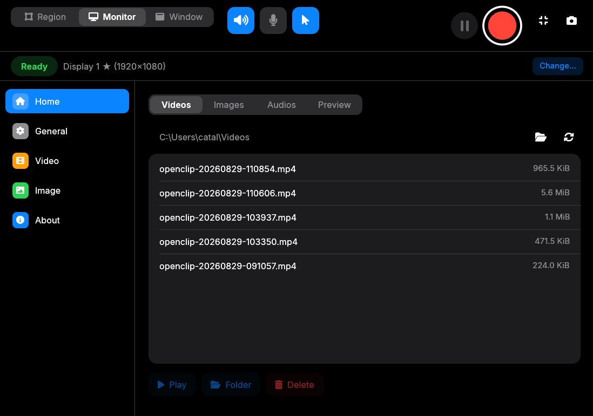
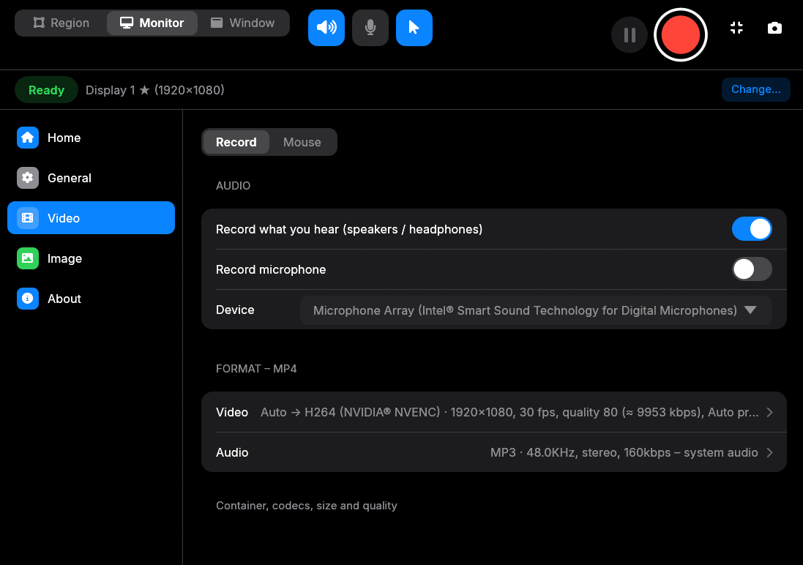
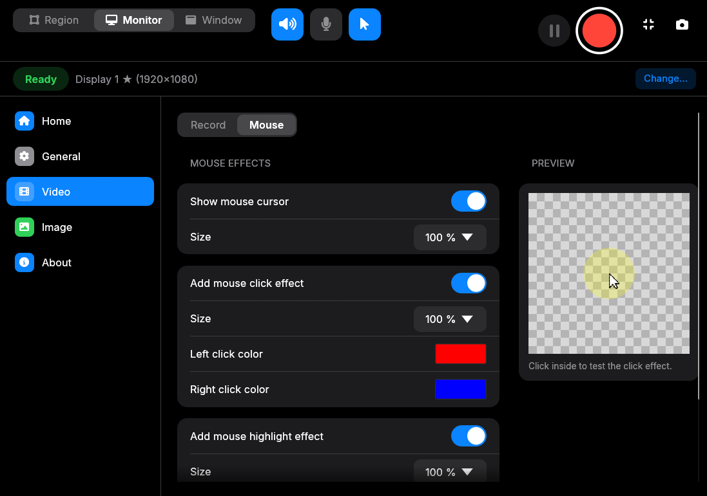

Screen recording with nothing to install.
openclip records a monitor, a window or a dragged region — with system audio and your microphone — straight to a standard MP4. No ffmpeg. No system codecs. One binary.
Pick a source
A whole display, one window, or a rectangle you drag on screen. Regions are cropped on the GPU on Windows.
Toggle audio
System audio, microphone, or both — mixed onto one timeline and resampled to 48 kHz stereo.
Hit REC
Get a plain MP4 that plays in VLC, Windows Media Player, Chrome, Edge and any ffmpeg-based tool.
Three pages. That's the whole app.
Toolbar on top, navigation on the left, pages on the right — a layout you already know how to use.

Your recordings, right where you made them.
Videos, screenshots and audio clips show up in a library the moment you stop recording. Play them, reveal them in the folder, or delete them without leaving the app.
- Videos, Images and Audios tabs plus a live Preview
- Pause and resume mid-recording
- Compact floating mini-bar while you record

The settings that matter, nothing else.
Frame rate, bitrate, full or half size, and the H.264 + MP3 format at a glance. Detailed encoder settings are one click away when you want them.
- H.264 via OpenH264, constant bitrate, 30 fps by default
- MP3 audio at 48 kHz stereo, 160 kbps
- Half size for lighter files on slower machines

Make the cursor easy to follow.
Scale the cursor, colour left and right clicks, and add a soft highlight halo with adjustable opacity. The preview box lets you click and see the effect before you record.
- Cursor size from 100% up
- Separate colours for left and right clicks
- Mouse snapshots are attached to every captured frame
Everything a recorder should do. Nothing it shouldn't.
Built to be small and predictable: one binary, one file format, and timing you can trust.
Monitor, window or region
Record a whole display, a single window, or drag a rectangle. On Windows, regions are cropped on the GPU so the encoder only sees the pixels you asked for.
System audio + mic
Capture what you hear, what you say, or both. Streams are mixed on one timeline and resampled to 48 kHz stereo.
Live preview
See exactly what is being recorded — including the mouse cursor — before and while you record.
Standard MP4 that plays everywhere
H.264 video and MP3 audio in a plain, non-fragmented MP4. Opens in VLC, Windows Media Player, Movies & TV, Chrome, Edge and every ffmpeg-based tool. Files over 4 GiB use co64.
No external runtime
OpenH264 and LAME are compiled from bundled sources at build time. The MP4 muxer is in-house. Nothing to install next to the binary — and it keeps itself current: when a new release is on GitHub, one click downloads it, verifies the checksum and swaps the executable in place.
Timing you can trust
Every frame carries its real capture timestamp. Frames are dropped — never desynchronised — if the encoder falls behind.
One pipeline, no detours.
Frames go from the capture backend to a file without touching a system codec.
Windows uses Windows.Graphics.Capture via windows-capture (BGRA frames, GPU-side crop for regions). macOS and Linux/X11 use xcap's video recorder for monitors and screenshot polling for windows.
BGRA/RGBA → I420 with the SIMD yuv crate, then OpenH264 in screen-content real-time mode. Annex-B output becomes AVCC length-prefixed samples; SPS/PPS go into avcC.
Each cpal stream pushes timestamped chunks. The mixer places them on the recording timeline — inserting silence for gaps such as WASAPI loopback going quiet — resamples, and feeds LAME. Each MP4 sample is exactly one 1152-sample MP3 frame.
A streaming, non-fragmented MP4 writer with per-sample durations from real timestamps, a keyframe table, 0.5 s interleaved chunks and co64 for large files. Output is round-tripped through the independent mp4-atom parser in tests.
Builds on the three desktops.
You need a Rust toolchain (edition 2024 → Rust 1.85+) and a C/C++ compiler for the bundled codecs.
Windows
Visual Studio Build Tools (MSVC). Nothing else. Capture uses native Windows.Graphics.Capture; system audio via WASAPI loopback.
macOS
Xcode command-line tools, plus autoconf automake libtool (LAME builds via autotools). macOS 13+ for capture; system-audio loopback needs macOS 14.6+.
Linux
build-essential autoconf automake libtool and the dev headers used by eframe / xcap / cpal: libxcb-render0-dev libxcb-shape0-dev libxcb-xfixes0-dev libxkbcommon-dev libssl-dev libxcb1-dev libxrandr-dev libdbus-1-dev libpipewire-0.3-dev libasound2-dev.
Two commands.
Clone, build in release mode, run. Output lands in ~/Videos as <prefix>-YYYYMMDD-HHMMSS.mp4.
$ git clone https://github.com/catalingrigoriev285/openclip.git
$ cd openclip
$ cargo build --release
$ ./target/release/openclip# record the primary monitor for 10 s
$ cargo run --release --example capture_to_mp4 -- 10 out.mp4
# encoder throughput on synthetic content
$ cargo run --release --example bench_encode -- 1920 1080 5Open source. Apache-2.0.
Bundled encoders: OpenH264 (BSD-2-Clause) and LAME (LGPL-2.1+). Stars, issues and pull requests are all welcome.